A microfinance banking app designed to make everyday financial services — transfers, bill payments, loans, and card management — accessible and stress-free for Nigerians who need banking that works the way they do.
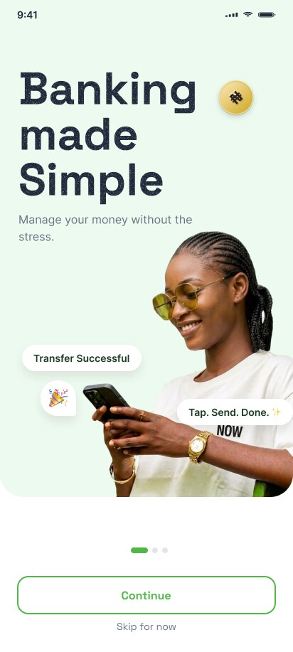
Kunchi Microfinance Bank serves a customer base that ranges from first-time smartphone users to experienced digital banking customers. The challenge was creating an experience that feels as polished as a neobank while remaining accessible to people who might be opening their first digital bank account.
I designed the full mobile experience — onboarding and KYC, home dashboard, transfers and payments, card management, loans, notifications, referrals, and security flows including biometrics and PIN management.
UI/UX Designer — end-to-end mobile design
iOS and Android
Microfinance banking (Nigeria)
50+ screens across 8 modules
The onboarding flow walks new users through account creation, BVN and NIN verification, phone confirmation, and password setup — each step clearly explained with progress visible throughout.
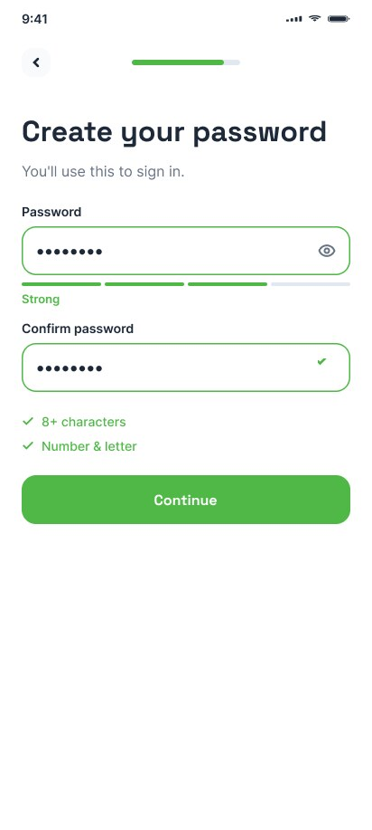
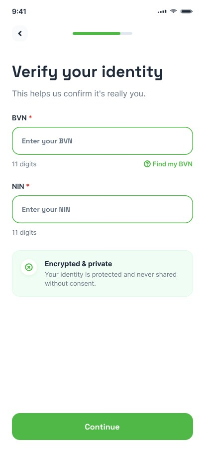
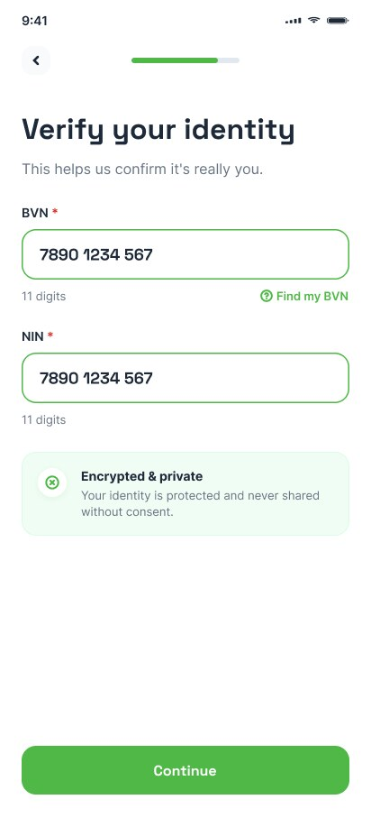
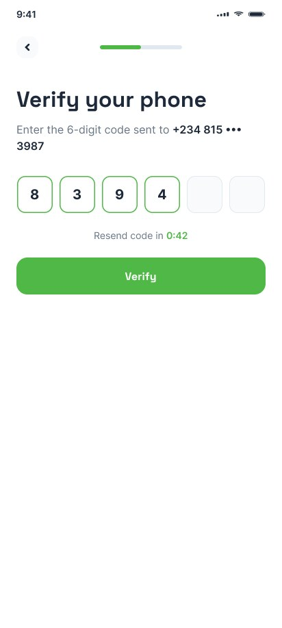
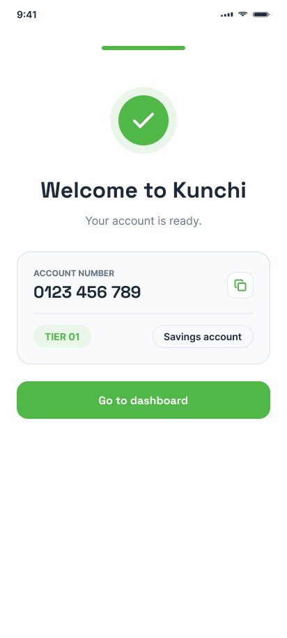
The home dashboard puts balance, quick actions (Transfer, Referrals, Bills, More), loan promotions, and recent transactions all in one view — no hunting, no buried features.
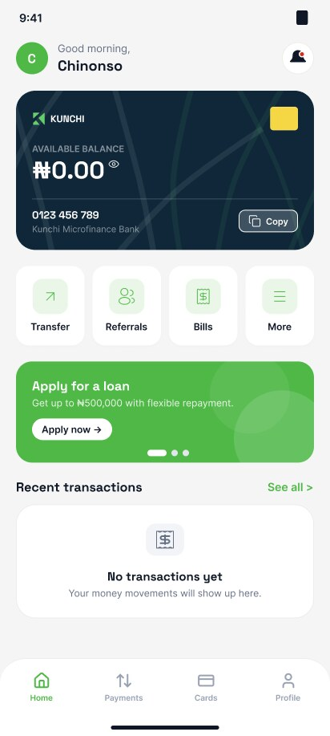
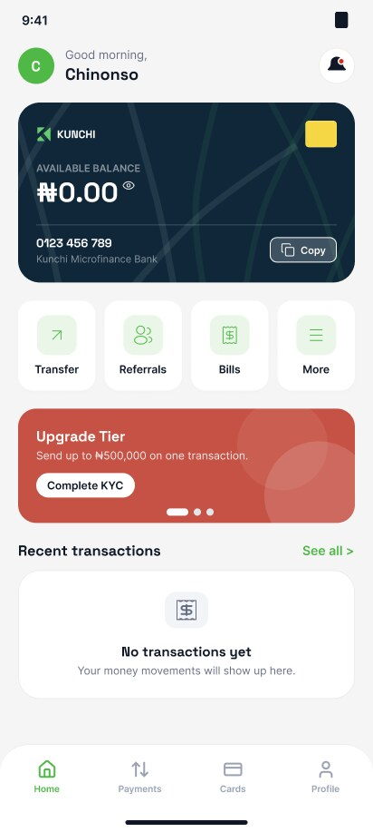
The payment hub centralizes all transaction types. Bank transfers show clear review screens with fee breakdowns before confirmation. Airtime and bill payments follow the same pattern — select, review, confirm.
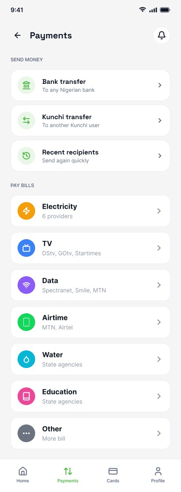
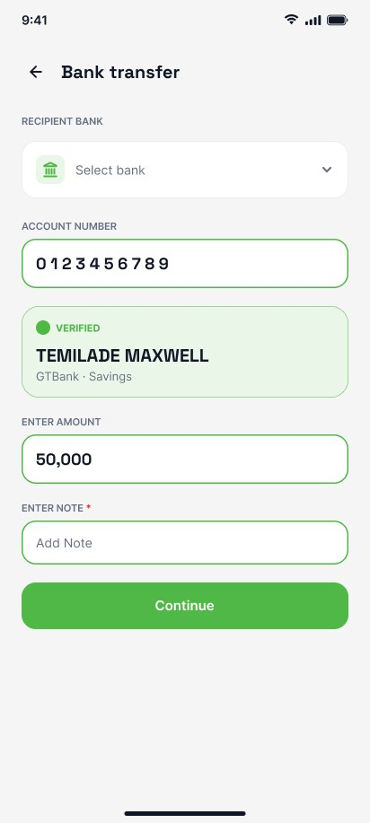
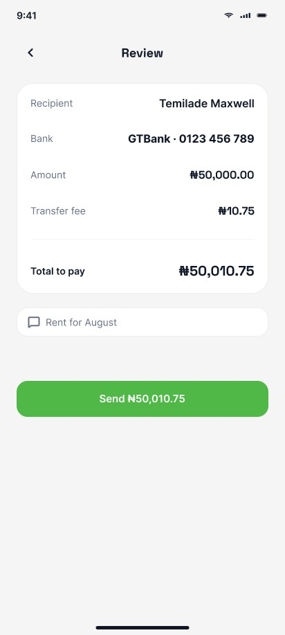
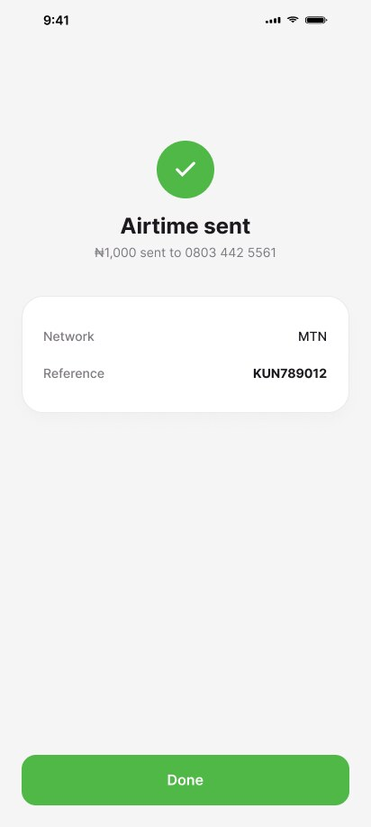
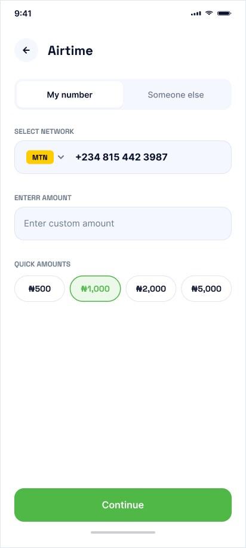
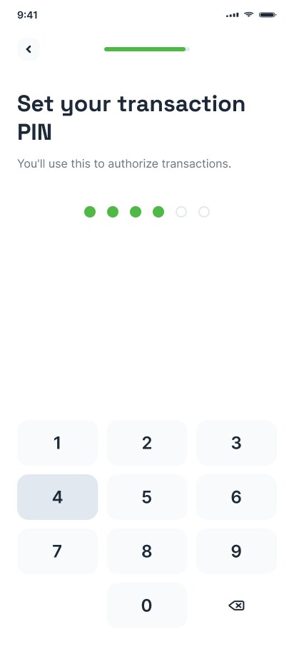
Card management lets users request, track delivery, and manage virtual and physical cards. The loans module presents clear options with terms visible upfront — no surprises in the fine print.
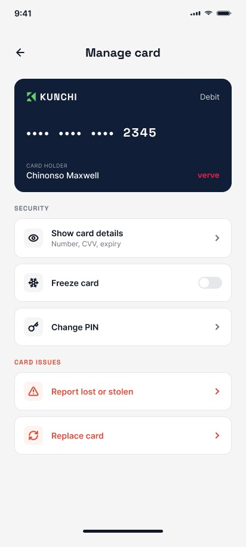
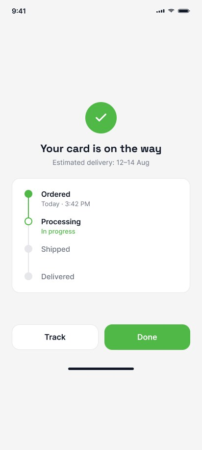
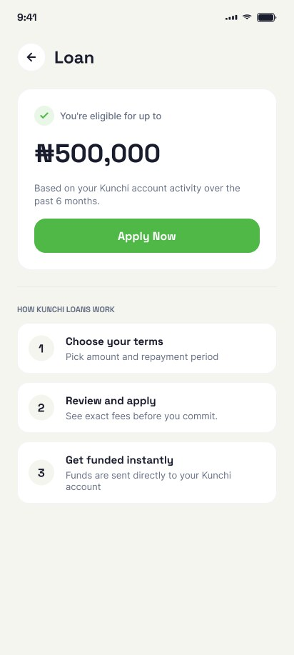
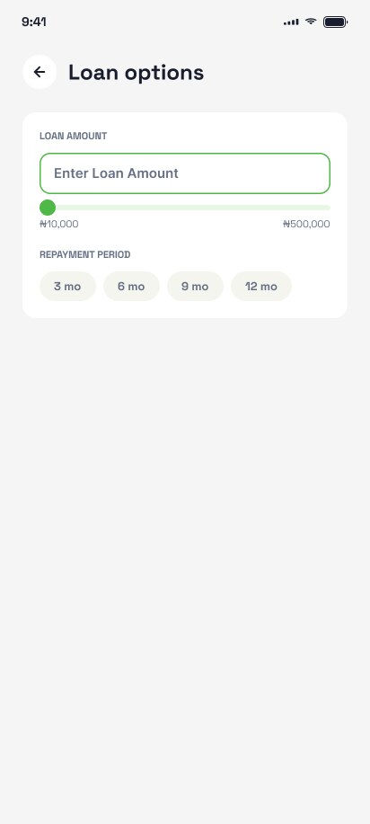
Fingerprint and facial recognition for login and transaction authorization. The security flows use clear, calm language — explaining why each step matters instead of just demanding compliance.
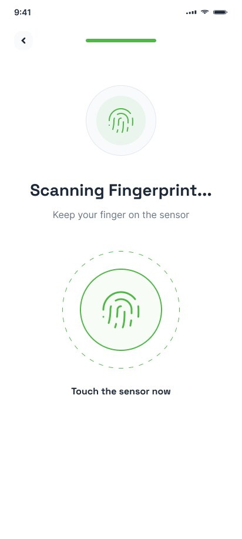
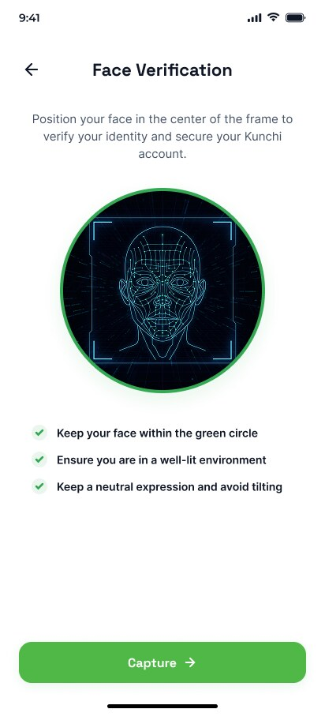
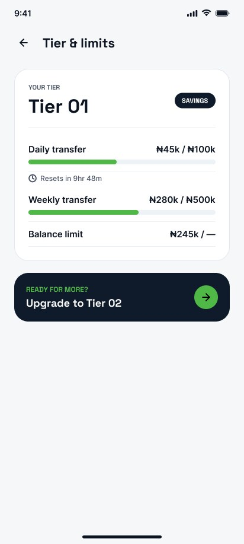
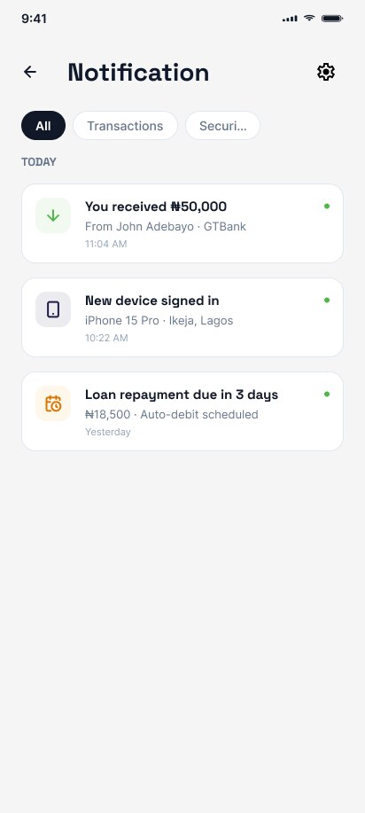
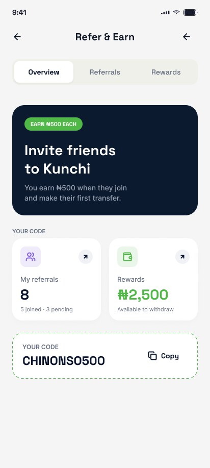
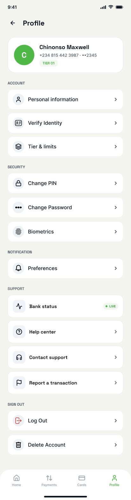
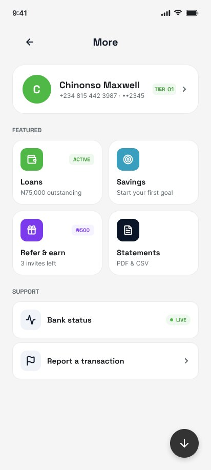
Many Kunchi customers are opening their first digital bank account. Every screen needed to be self-explanatory — no assumed knowledge of banking terminology.
Basic features like transfers are immediately accessible. Advanced features like loans and card management reveal themselves as users grow comfortable with the platform.
Microfinance banks carry trust concerns. The design needed to feel as polished and secure as any tier-1 bank app while remaining warmer and more approachable.
Savings goals, group savings (ajo), merchant payments integration, and expanded bill payment categories.
I'm currently open to senior product design roles — fintech, AI-native, and mobile-first teams.
Get in touch